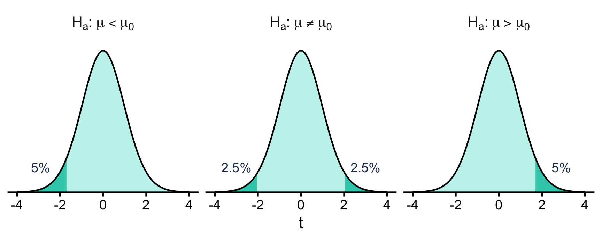
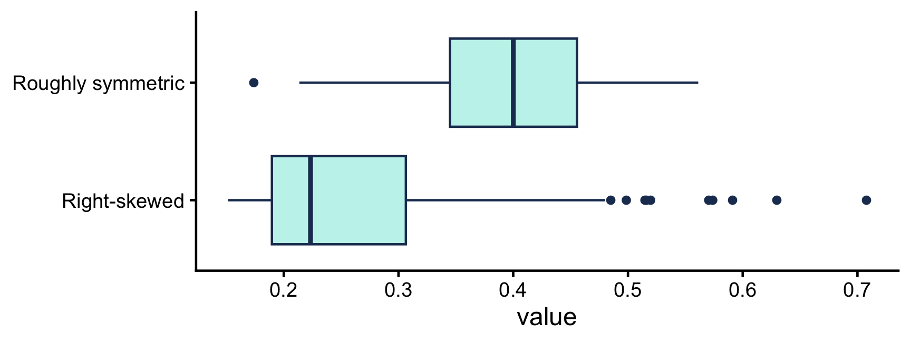

A B C
1 a t 1
2 b u 2
3 c v 3URP 506 Planning Methods
2026-01-01
?t.testExample: Is the average commute in a city longer than 20 minutes?
mean of x in R output is the sample mean.Example: survey 100 commuters -> sample mean 23 min, \(p = 0.01\)

Figure 1
Shaded = 5% rejection region. \(t\) lands there \(\iff\) \(p < 0.05\) -> reject \(H_0\).
A city wants to know whether a new bus-priority program reduced average bus travel time. Researchers sample bus trips before implementation and a separate sample of trips after.
C. Two independent samples (before trips \(\neq\) after trips), and “reduced” has a direction.
Question: What kinds of places have more chain restaurants?
chainness: chain_pct = share of restaurants that are chains (0 to 1)factors: majority_vote (Trump / Clinton, 2016), median_income, …MSA_GEOIDPlan: join the two tables -> compare chain_pct across groups with t-tests
x
A B C
1 a t 1
2 b u 2
3 c v 3y
A D
1 a 3
2 b 2
3 d 1left_join(x, y, by = "A")
A B C D
1 a t 1 3
2 b u 2 2
3 c v 3 NAKeep every row of x; bring in y’s columns where the key matches; NA where it doesn’t.
| Function | Keeps rows from |
|---|---|
left_join(x, y) |
all of x |
right_join(x, y) |
all of y |
inner_join(x, y) |
only keys in both |
full_join(x, y) |
keys in either |
In the lab:
?t.test| Argument | Meaning | Default |
|---|---|---|
x |
first group (required) | none |
y |
second group | NULL -> one-sample |
alternative |
your \(H_a\) | "two.sided" |
mu |
value in \(H_0\) | 0 |
var.equal |
equal variances? | FALSE -> Welch |
t.test() does 2 jobs at once: test (\(p\)-value) and estimate (confidence interval). See the handout for reading the CI.
Error in t.test.default(chainness_joined$chain_pct, 0.5, alternative = "greater") :
not enough 'y' observationsmu =, R reads 0.5 as the second argument: ychain_pct runs from 0 to 1. The benchmark is 0.5, not 50alternativealternative is your \(H_a\), always stated as x relative to y:alternative |
\(H_a\) |
|---|---|
"two.sided" |
\(\mu_x \neq \mu_y\) |
"greater" |
\(\mu_x > \mu_y\) |
"less" |
\(\mu_x < \mu_y\) |
Which group is x is decided by position, not by the variable name.
| Question | \(H_a\) | R |
|---|---|---|
| Is the average chain % above 50%? | \(\mu > 0.5\) | t.test(x, mu = 0.5, alternative = "greater") |
| Do Trump and Clinton MSAs differ? | \(\mu_T \neq \mu_C\) | t.test(Trump, Clinton, alternative = "two.sided") |
| Do high-income MSAs have a lower chain %? | ? | ? |
“Lower” has a direction -> one-tailed. You decide which group is x, then pick the matching alternative. That’s Q2–Q3.

Figure 2
table() Welch Two Sample t-test
data: Trump$chain_pct and Clinton$chain_pct
t = 5.0265, df = 371.63, p-value = 7.783e-07
alternative hypothesis: true difference in means is not equal to 0
95 percent confidence interval:
0.02706139 0.06183976
sample estimates:
mean of x mean of y
0.4368695 0.3924190 Aim for all four in Q3.
1. Fail to reject \(\neq\) evidence for the opposite
alternative = "greater" with \(p = 1\) -> fail to reject \(H_0\). It does not show the mean is significantly less than \(0.5\). To claim that, run alternative = "less".
The handout’s one-sample write-up gets this wrong. Don’t copy that sentence.
2. Association \(\neq\) cause
A t-test shows the groups differ. It doesn’t tell you why (market structure, preferences, urban form). Mechanisms are hypotheses, not findings.
income_group with mutate() + ifelse() (see Lab 3)alternative.Feel free to leave once you’re done.